Sprite Transformations
In the previous article, we learned how to animate sprites by using animation modifiers. In this section, we’ll talk about sprite transformations. There are three standard types of transformations that can be applied to sprites:
Scaling.
Rotation.
Translation.
Note: Standard transformations are always applied in that order.
Let’s take a look at these three transformations.
Scaling
First, let’s examine the scaling transformation. There are four sprite attributes to control it:
scaling - the factor of the horizontal scaling of the sprite
scalingY - the factor of the vertical scaling of the sprite
scalingCenterX - the x-coordinate of the center of transformation
scalingCenterY - the y-coordinate of the center of transformation
Each of the three transformation configs have an alias for the transformation that can be used in configuring the initial transformation. For scaling the config shorthand pseudo config, or alias, is called scaling.
Note: When sprite attributes are set, they normally go through a process of normalization, where known aliases for a particular sprite type expand into actual attributes. Be mindful of that when looking for sprite attributes inside the sprite.attr object. You won’t find aliases there. This also means that pseudo attributes cannot be used with the setAttributes method of the sprite, if its bypassNormalization parameter is true. Finally, aliases are nice for clarity - for example, when declaring sprites in views - but in performance critical code it is best to use original attributes.
scaling: {
x: {Number},
y: {Number},
centerX: {Number},
centerY: {Number}
}And as with the rotation transformation, the center of scaling is the center of the sprite’s bounding box by default.
Let’s say we want to scale our 'rect' sprite so that it looks like a rectangle rather than a square. To do this, we can simply use different scale factors for horizontal and vertical scaling like so:
scaling: {
x: 2,
y: 1.25
}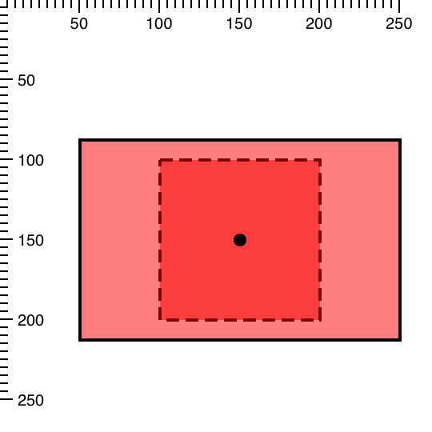
If we wanted uniform scaling we could just say:
scaling: 2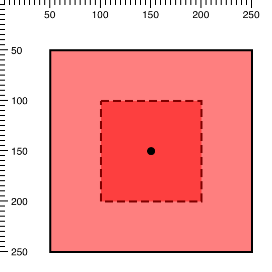
Let’s say we want to change the center of the scaling to the top-left corner of the sprite while maintaining the previous scaling factors.
{
type: 'rect',
x: 50,
y: 50,
//...
scaling: {
x: 2,
y: 1.25,
centerX: 100,
centerY: 100
}
}This is the result of the above code:
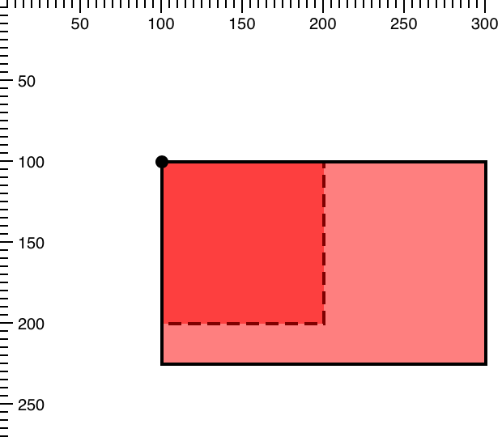
The sprite just grew to the bottom/right instead of uniformly in both directions.
Rotation
The second transformation we’ll look at is rotation. There are three sprite attributes that allow us to control it:
rotationRads - the angle of rotation of the sprite in radians, where a positive value means clockwise rotation
Ext.draw.sprite.Sprite-cfg-rotationCenterX - the x-coordinate of the center of rotation
Ext.draw.sprite.Sprite-cfg-rotationCenterY - the y-coordinate of the center of rotation
Let’s rotate our sprite by 45 degrees clockwise, which is \(\frac{\pi}{4}\) radians. You can always use the Ext.draw.Draw.rad method to convert degrees to radians, e.g.: Ext.draw.Draw.rad(45).
{
type: 'rect',
//...
rotationRads: Math.PI / 4
}By default, the center of rotation is the center of the sprite’s bounding box. On the image below it is indicated with a black dot.
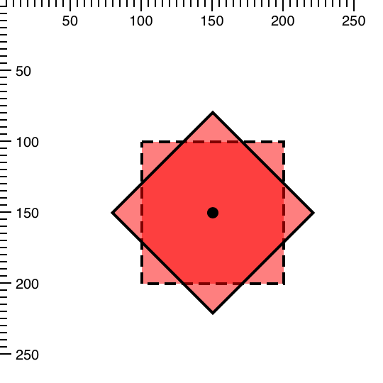
Let’s say we want to rotate our sprite around the top left corner. For this, we can simply move the center of rotation to the top-left corner of the sprite using rotationCenterX and rotationCenterY attributes:
{
type: 'rect',
x: 100,
y: 100,
//...
rotationRads: Math.PI / 4,
rotationCenterX: 100,
rotationCenterY: 100
}There is also a special pseudo attribute called rotation. It can be either a number or an object. If it’s a number, it specifies the angle of rotation of the sprite in degrees, instead of radians. If it’s an object, it should be in the following form (where all properties are optional):
rotation: {
rads | degrees: {Number},
centerX: {Number},
centerY: {Number}
}We can rewrite the previous example like this:
{
type: 'rect',
x: 100,
y: 100,
//...
rotation: {
degrees: 45,
centerX: 100,
centerY: 100
}
}Translation
There are two attributes every sprite has to control translation:
translationX - the horizontal distance to move the sprite
translationX - the vertical distance to move the sprite
We’ll continue to use the rect sprite from the Part 1 of this series and apply all transformations to it.
{
type: 'rect',
x: 100,
y: 100,
width: 100,
height: 100,
//...
translationX: -50,
translationY: -50
}The translated sprite will look like the following image, where the dashed line indicates the original untranslated position.
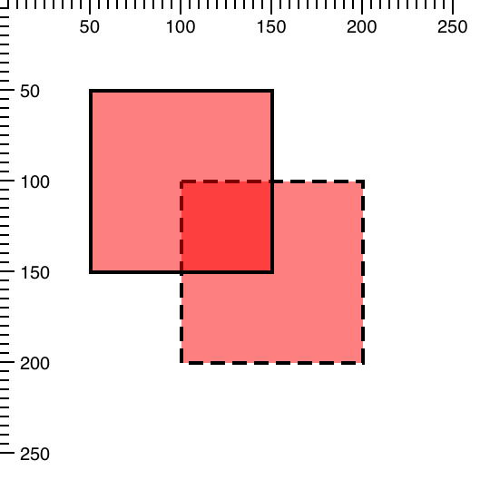
Alternatively, you could specify the same transformation using the following syntax:
translation: {
x: 100,
y: -50
}As with the previous transformations, translation is a pseudo attribute or an alias [^alias].
Combining Transformations
Now that we have looked at each transformation separately, let’s combine them by scaling and rotating the sprite simultaneously.
type: 'rect',
x: 100,
y: 100,
width: 100,
height: 100,
//...
rotation: {
degrees: 45,
centerX: 100,
centerY: 100
},
scaling: {
x: 2,
y: 1.25,
centerX: 100,
centerY: 100
}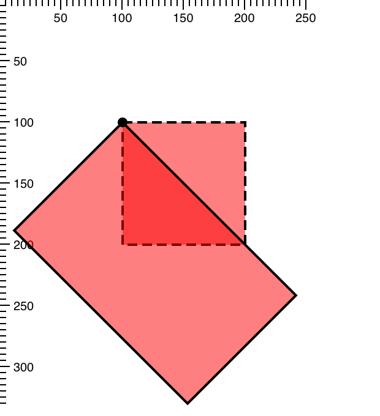
In this example the center of transformation is the same for both scaling and rotation. The transformed sprite looks as if the original sprite was first scaled, then rotated.
Finally, let’s add the translation transformation to the mix:
translation: {
x: 50,
y: -50
},
rotation: {
degrees: 45,
centerX: 100,
centerY: 100
},
scaling: {
x: 2,
y: 1.25,
centerX: 100,
centerY: 100
}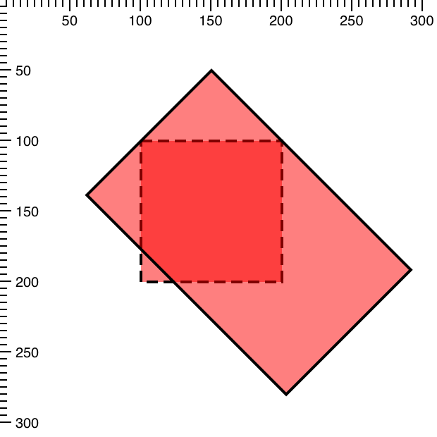
Notice how translation is applied after scaling and rotation. This order is always the same:
scale -> rotate -> translateNote: the default order of transformations has changed in Ext JS 6.0.1+ from rotate->scale->translate to scale->rotate->translate. This has been done to be more compatible with other libraries and to prevent shearing when transformations are applied. This change won’t affect charts, but it may affect your custom drawing code. Please keep this in mind when upgrading to Ext JS 6.0.1+. You can also use an override, if you’d rather keep the previous order of transformations.
Transformations on an Existing Sprite
We just covered all of the standard transformations that are always applied in the same order. But what if we wanted to change this order, apply more than three transformations at once, or maybe use another type of transformation entirely, like shearing? That’s where transformation matrices come in handy.
Every sprite has a transformation matrix set by default with no transformations applied. This matrix communicates to the coordinate system of the surface how the sprite should be deformed and / or located within the coordinate plane. The coordinate plane of the draw surface starts with 0,0 as the top-left corner by default. The setTransform method will override the current transformation matrix of a sprite with the given matrix. Alternatively, you can use the transform method of a sprite, which will multiply the given matrix with current transformation matrix. In other words, it will add to the current transformation instead of replacing it.
Since multiplying matrices manually can be rather tedious, the Ext.draw.Matrix class is meant to help us alleviate the task. For example, this is how we can create an identity matrix and then multiply it, first with a rotation matrix, and then with a translation matrix:
var m = new Ext.draw.Matrix().scale(sx, sy).translate(tx, ty);
The matrix m represents a composite transformation that we can pass to the transform and setTransform methods of a sprite instead of an array of matrix elements.
Let’s examine a concrete example of how transformation matrices can be used. Let’s say we have a “rect” sprite like this:
{
type: 'rect',
x: 0,
y: 0,
width: 100,
height: 100
}And we want to rotate it around the bottom-right corner counter-clockwise by 180 degrees:
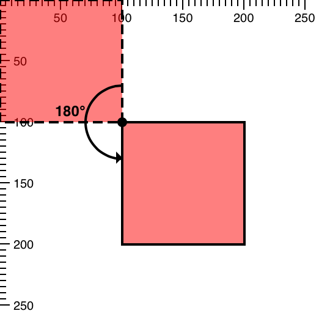
Since we want to rotate the sprite around the bottom-right corner, we can’t just apply the rotation transformation:
rectSprite.transform(new Ext.draw.Matrix().rotate(Math.PI));This will rotate our sprite around the origin in such a way that it will go off-screen:
So first we need to translate the origin to the bottom right corner of the sprite or (100, 100) coordinate:
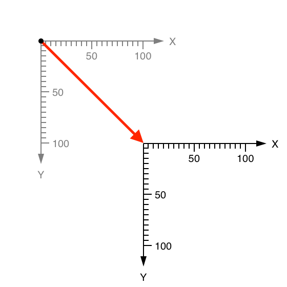
Then rotate the coordinate space by 180°:
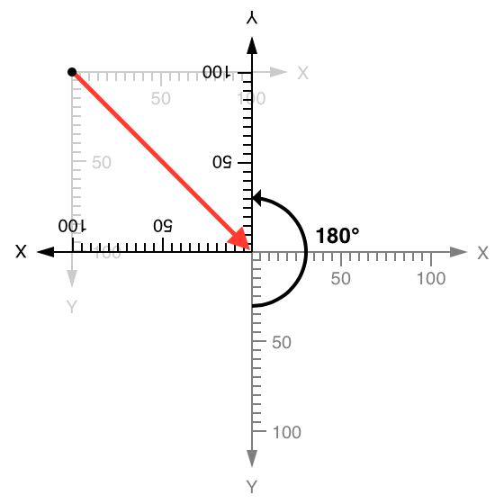
Then we have to translate the origin back by (-100, -100). But now that we rotated the coordinate grid meaning the back (negative coordinates) is forward:
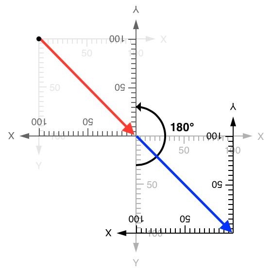
And now our sprite is rendered with (0, 0) as the top-left coordinate and (100, 100) as the bottom-right coordinate (its normal coordinates) in the transformed coordinate space.
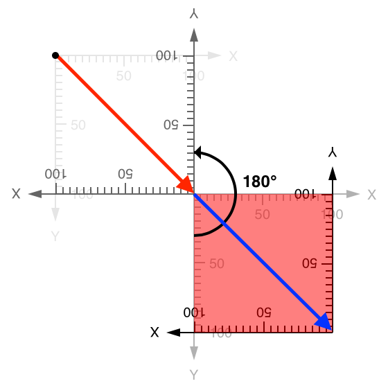
This is exactly the type of transformation we wanted. The code for it will look like this:
var M = new Ext.draw.Matrix().translate(100,100).rotate(Math.PI).translate(-100, -100);
rectSprite.setTransform(M);We only performed the above transformation this way to give an example of how you can combine multiple simple transformations to create a composite transformation with predictable results. You can actually rotate a sprite around a certain point, by passing two extra parameters to the rotate method - the coordinates of the center of rotation:
var M = new Ext.draw.Matrix().rotate(Math.PI, 100, 100);
rectSprite.setTransform(M);Transformation Matrix Detail
There may be times when the transformation you need to apply cannot be easily accomplished using the sprite’s convenience transform methods. Or, you may want to pass a matrix directly to the sprite in order to set a transformation. The setTransform method allows for this sort of advanced usage as well. The following tables show each transformation matrix used when applying transformations to a sprite.
\\(Translate = \begin{bmatrix}
1 & 0 & t_x \\
0 & 1 & t_y \\
0 & 0 & 1 \\
\end{bmatrix}\quad\\)
\\(Rotate = \begin{bmatrix}
\cos \theta & -\sin \theta & 0 \\
\sin \theta & \cos \theta & 0 \\
0 & 0 & 1 \\
\end{bmatrix}\quad\\)
\\(Scale = \begin{bmatrix}
s_x & 0 & 0 \\
0 & s_y & 0 \\
0 & 0 & 1 \\
\end{bmatrix}\\)
\\(Shear_x = \begin{bmatrix}
1 & \lambda_x & 0 \\
0 & 1 & 0 \\
0 & 0 & 1 \\
\end{bmatrix}\quad\\)
\\(Shear_y = \begin{bmatrix}
1 & 0 & 0 \\
\lambda_y & 1 & 0 \\
0 & 0 & 1 \\
\end{bmatrix}\\)By multiplying matrices for translation, rotation, scaling, and shearing any number of times in the desired order, you will get a single matrix for a composite transformation as a result. This matrix can then be used as a value for the setTransform method of a sprite like so:
mySprite.setTransform([a, b, c, d, e, f]);In this case, a, b, c, d, e, f are numeric values that correspond to the following transformation matrix components:
\\[
M = \begin{bmatrix}
a & c & e \\
b & d & f \\
0 & 0 & 1 \\
\end{bmatrix}
\\]Conclusion
The Draw package enables you to create simple transform methods when needed and gets out of your way when you want to take the wheel. The Draw API simplifies the job of transforming the shape of sprites with its convenient transform methods. It will additionally yield control to the power user needing to articulate a sprite using pre-defined transformation matrices.
Have fun creating your own custom drawings for your apps and as always, reach out to us on the forums if you have questions!